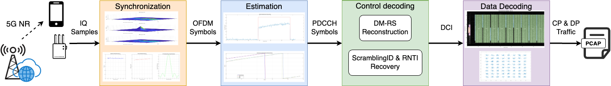
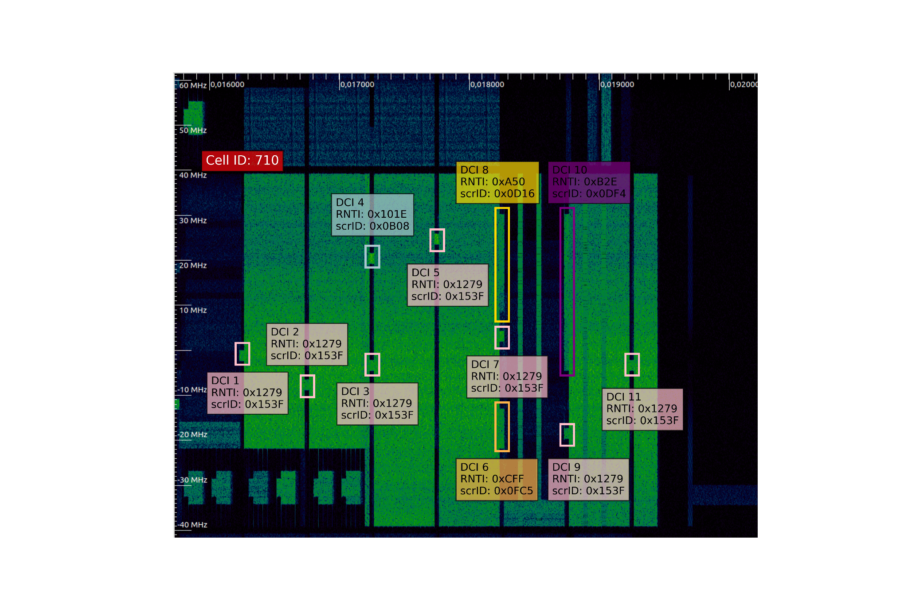

Golden
Sniffer.
A different approach to blind 5G downlink decoding: recover hidden radio parameters by exploiting the linear structure of Gold sequences.

Jump to a section below.
Overview
Golden Sniffer is a novel, low-complexity passive 5G NR sniffer that exploits the deterministic nature of Gold sequences in DMRS (Demodulation Reference Signals) to achieve efficient blind detection and decoding of downlink control and data channels. Unlike traditional sniffers that perform exhaustive search, Golden Sniffer uses DMRS phase analysis to drastically reduce computational complexity while achieving >94% DCI detection rate.
From raw IQ to decoded downlink
Synchronize & identify
Detect the SSB, decode PBCH, obtain basic cell parameters and identify NZP-CSI-RS resources.
Locate control resources
Apply energy thresholding and phase-based reconstruction to detect candidate PDCCH allocations and DM-RS initialization parameters.
Recover control parameters
Use linear inversion to jointly infer the RNTI and scrambling ID while testing feasible DCI sizes.
Decode data channels
Infer user-specific BWP configuration and PDSCH DM-RS. Cache successful parameters and infer ZP-CSI-RS exclusions when needed.
What “low complexity” means
A blind 5G sniffer must recover unknown parameters, including user identifiers (RNTIs) and scrambling IDs. Testing all possible combinations creates a very large search space.
Golden Sniffer avoids this exhaustive search. It uses the QPSK phase structure to reconstruct candidate DM-RS sequences and exploits the mathematical structure of Gold sequences to recover their initialization parameters. It then uses linear equations to jointly infer the RNTI and scrambling ID, rather than testing each possible pair. Some candidate configurations, such as DCI sizes, still need to be tested initially. Once valid parameters are found, they are cached and reused to reduce the work required for subsequent transmissions.
Complexity Analysis
Traditional Exhaustive Search
(per PDCCH candidate):
- DM-RS scrambling IDs to test: up to 65,536 (16-bit space)
- RNTIs to test: 65,536 (16-bit space)
- DCI sizes to test: ~22
- Every (RNTI, size) hypothesis requires a full polar decoding + CRC check
Golden Sniffer (DM-RS-guided)
(per PDCCH candidate):
- The DM-RS scrambling ID is read from the DM-RS phases (no search)
- For each DCI size, one GF(2) linear solve checks the CRC consistency and returns the RNTI directly (no RNTI enumeration)
- Only the ~22 DCI sizes are tried
Based on 3GPP Specifications
Golden Sniffer implements algorithms based on 3GPP specifications:
- TS 38.211: Physical channels and modulation (DM-RS, PDCCH, PDSCH)
- TS 38.212: Channel coding (Polar codes for DCI, LDPC for data)
- TS 38.213: Control procedures (CORESET and search spaces)
- TS 38.214: Data procedures (resource allocation and MCS tables)
- TS 38.331: RRC protocol (MIB and SIB1 message formats)
Supported DCI Formats
Golden Sniffer currently interprets fallback DCI formats 0_0 and 1_0 for uplink and downlink scheduling.
| Format | Direction | Description | Typical Use Case |
|---|---|---|---|
| DCI 0_0 | Uplink | PUSCH scheduling grant | UL data transmission |
| DCI 1_0 | Downlink | PDSCH scheduling grant | DL data transmission |
These formats provide scheduling information, including:
- Frequency domain resource allocation (Type 0 and Type 1)
- Time domain resource allocation
- MCS and transport block size indication
- HARQ process number tracking
- NDI (New Data Indicator) for retransmissions
A physical-layer countermeasure
The paper evaluates artificial deep fading introduced by frequency-domain PDCCH amplitude modulation. It disrupts blind phase reconstruction while legitimate receivers retain their known reference parameters. The evaluated configurations trade sniffer failure against an SNR penalty of 1–7 dB, depending on aggregation level and DCI duration.
Results
Performance in controlled and operational 5G networks.
The controlled 5G SA testbed uses srsRAN, Open5GS and commercial UEs. The prototype runs in MATLAB. Processing is offline, approximately 30 seconds per second of captured data in the reported prototype.
Operational-network validation
Operational-network validation was conducted in n78 (3680.01 MHz, 80 MHz bandwidth) and n28 (763 MHz, 10 MHz bandwidth), spanning TDD and FDD. It demonstrates recovery of user-specific RNTIs and scrambling IDs, including configurations where the scrambling ID differs from the PCI.

Control-channel decoding
The table reports DCI detection rates and total decoding time across 80 high-SNR captures (>26 dB, >1,000 DCIs). Each test averages 20 independent 1-second captures.
| Scenario | DCI Detection Rate | DCI 0_0 (UL) | DCI 1_0 (DL) |
|---|---|---|---|
| Single UE (FDD) | 92.20% ± 3.09% | ✓ | ✓ |
| Multi UE (FDD) | 97.22% ± 2.04% | ✓ | ✓ |
| Multi UE (TDD) | 94.66% ± 1.92% | ✓ | ✓ |
| Network Slicing | 98.52% ± 0.54% | ✓ | ✓ |
Signal quality matters
With AWGN injected into a 23.7 dB capture, detection exceeds 90% above 16.5 dB. It drops from 88.7% at 15.4 dB to 12.9% at 12.8 dB, approaching zero below 12.5 dB.
Multipath robustness
NLOS evaluation uses 3GPP CDL models, 10,000 decoding attempts per scenario and 1 Hz Doppler. The bars show the reported mean detection rates.
Reported uncertainties: ±0.46, ±0.44 and ±0.33 percentage points, respectively.
Countermeasure evaluation
Table 3 reports zero-insertion configurations yielding 100% sniffer failure in the evaluated settings while legitimate UEs continue decoding. SNR penalties span 1–7 dB across aggregation levels and DCI durations. The table marks configurations with fewer than 16 DM-RS symbols as already immune to this approach.
| AL | DCI duration 1 | DCI duration 2 | DCI duration 3 | |||
|---|---|---|---|---|---|---|
| # Zeros | Penalty [dB] | # Zeros | Penalty [dB] | # Zeros | Penalty [dB] | |
| 1 | 9 | 6 | 3 | 7* | 2 | 6* |
| 2 | 9 | 3 | 2 | 4 | 1 | 4* |
| 4 | 5 | 2 | 9 | 2 | 2 | 2 |
| 8 | 9 | 1 | 5 | 2 | 3 | 1 |
| 16 | 18 | 1 | 9 | 1 | 6 | 1 |
* DCIs with fewer than 16 DM-RS symbols are immune to this approach.
Paper
Golden Sniffer: Low-Complexity 5G New Radio Signal Interception Exploiting Gold Sequences
Ivan Palamà, Stefano Mangione, Alessandra Dino, Giulia Focarelli, and Giuseppe Bianchi.
ACM MobiCom ’26 · October 26–30, 2026 · Austin, TX, USA
Read PDF ↗